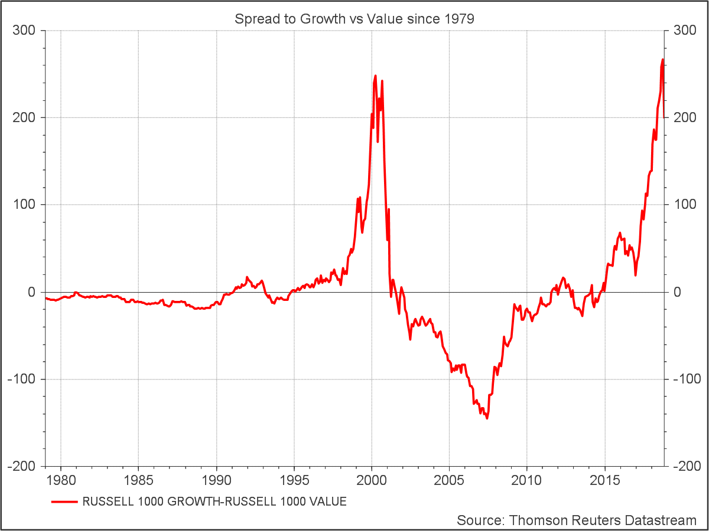
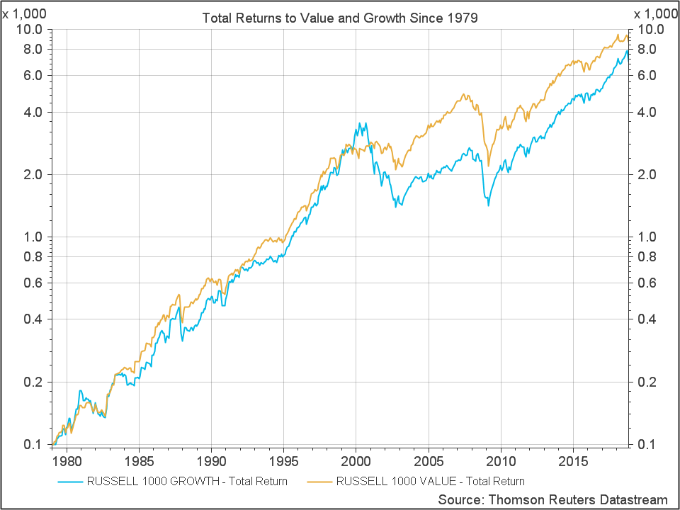
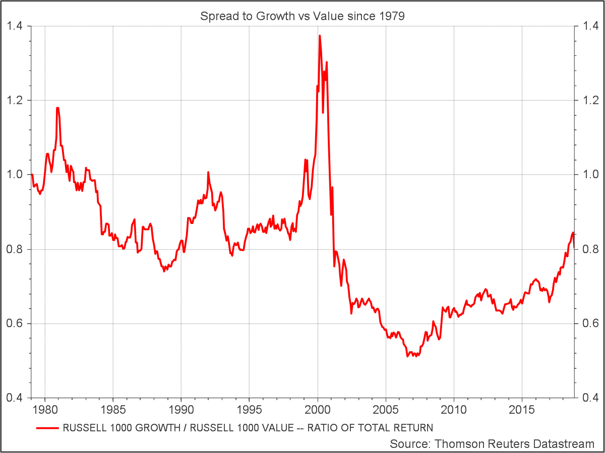

A Correction in the Making?

Earlier this week I came across this Datastream chart of the spread between the Russell 1000 Growth and Value Indices since 1979. With last month’s tech sector melt down front of mind – it paints an intriguing picture – of growth pitching down from a similar level to where it was at the start of the tech wreck in 2001.
Does the chart imply that growth investors are way out in front of value investors (as measured by the Russell indices), but stand on the precipice of a potentially violent correction? All is not as it seems!
The chart above shows only the price index, not total returns which include dividends. High flying growth stocks typically pay dividends at a lower rate than value stocks, so we should compare total returns inclusive of dividends for a fair comparison of historical performance. The chart below shows the total returns to both indices since 1979 with log scale. On a total return basis, it’s the value index which is out in front after nearly 40 years.

The chart below shows the spread as a ratio of the two total return indices. Growth spiked into the Dot Com bubble of the late 90s and fell way behind in the fire that was the Tech Wreck of the early 2000’s.

It’s quite striking how different the spreads look on the basis of price and total return, but it got me thinking about something else. Where’s the value premium? Over 40 years the compound annual return was 11.9% to value vs 11.3% to growth for the Russell indices.
Back in university days we read papers showing how, over the long term, value stocks – the high dividend payers and out of favor firms – outperform the expensive glamorous (growth) stocks that everyone wants to own. There seemed to be some debate as to the reasons why but not as to the existence of the value premium itself.
But maybe 40 years isn’t long enough? In fact John Bogle, the founder of Vanguard has been back much further, in a speech he gave in 2001, he offered this perspective:
The question, of course, is whether it is growth or value which provides the higher pre-tax returns. Again, the mutual fund laboratory is a wonderful place to test the issue. Years ago, I analyzed the records of growth funds and value funds going back to 1937, long before the inception of the S&P/Barra Growth and Value Indexes, which date back to 1975. Linking my data with the data for these two indexes during the entire 63-year period, it is clear that the relative returns of the two investing styles move back and forth….
In the very long run, the cycles [value and growth] have ironed themselves out and, at least in my view, there is no reason to expect either style to outpace the other over time (despite the important tax advantage for the growth investor). And the 1937- 2000 record is witness to the profound pervasiveness of RTM (reversion to the mean). Despite all the cycles, the record for the past 63 years shows these annual rates of return:
Growth, +11.8%; Value, +11.9%. Now to be sure, some brilliant academics disagree with my conclusion. In their seminal 1992 paper, Professors Fama and French showed that low p/e, low market-to-book stocks had provided higher returns than high p/e, high market-to-book stocks. But I would observe that their study, which covered the period 1963-1990, shares a common limitation with every other study of investment returns that has ever been undertaken. It was period dependent. And it happens to have coincided quite neatly with the era of Value investing that took place from 1968 through 1989. Yet for ten long years following their study, it was Growth that, by a wide margin, sat in the drivers seat.
Gulp! Reminds me of that old Wall Street quote, “You’re walking around blind without a cane, pal”
So if Bogle is right and we can expect reversion to the mean in the future, where are we at in terms of the current tussle between value and growth?
Using Datastream I compared the relative price-to-book ratios of stocks in the S&P 500 over 20 years. Sorting all stocks by price-to-book ratio and grouping the stocks into 5 buckets of equal market cap, one can compare the most expensive 20% of the market with the cheapest 20% through time. Portfolios were formed annually on 31 December (except for the last portfolio formed 31 October 2018) The chart below shows the results:

Over the past 20 years of annual samples, the most expensive quintile of the S&P 500 peaked at a P/B ratio of around 18 towards the end of the Dot Com boom and hit a low of 5.8 in 2008 around the time of the GFC. Since then Growth has been making a comeback and now stands at 14.7. Value on the other hand has gotten cheaper. With Price at 1.1 times book currently, it hasn’t moved significantly from it’s GFC lows of 0.8. As a result the ratio of the top and bottom quintiles now stands at a hefty 13.4 times.
If you believe in mean reversion, gravity favors value at this point.
S&P500 Price/Book Ratio by Bottom Quintile (Value) & Top Quintile (Growth)
| Date | Value | Growth | Ratio |
|---|---|---|---|
| 1997-12 | 2.0 | 12.1 | 5.9 |
| 1998-12 | 2.1 | 16.2 | 7.6 |
| 1999-12 | 2.1 | 18.1 | 8.7 |
| 2000-12 | 1.9 | 15.7 | 8.5 |
| 2001-12 | 1.6 | 10.7 | 6.6 |
| 2002-12 | 1.3 | 7.9 | 5.9 |
| 2003-12 | 1.6 | 7.4 | 4.5 |
| 2004-12 | 1.6 | 7.3 | 4.5 |
| 2005-12 | 1.6 | 6.3 | 4.1 |
| 2006-12 | 1.6 | 7.0 | 4.3 |
| 2007-12 | 1.4 | 8.1 | 5.9 |
| 2008-12 | 0.8 | 5.8 | 6.9 |
| 2009-12 | 1.0 | 6.5 | 6.2 |
| 2010-12 | 1.1 | 5.9 | 5.6 |
| 2011-12 | 0.9 | 7.2 | 7.7 |
| 2012-12 | 1.0 | 6.5 | 6.5 |
| 2013-12 | 1.2 | 8.6 | 7.1 |
| 2014-12 | 1.3 | 10.8 | 8.3 |
| 2015-12 | 1.0 | 11.9 | 12.2 |
| 2016-12 | 1.3 | 10.2 | 7.8 |
| 2017-12 | 1.1 | 11.6 | 10.0 |
| 2018-10 | 1.1 | 14.7 | 13.4 |